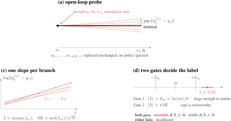
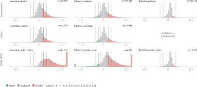
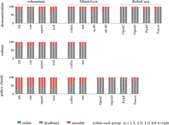
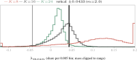

Action chunking improves behavioural cloning, and several mechanisms have been proposed to explain why: temporal consistency, horizon reduction, representation learning, non-Markovian expressivity, delayed conditioning, implicit ensembling, and compensation for limited context. Every one concerns the error the policy introduces, whether by reducing how much of it enters or how often it re-enters the policy's own input. We instead study what happens to an action error once it enters the system. We introduce a per-state perturbation framework that measures error propagation under open-loop execution, where the remainder of a chunk is replayed without replanning. The resulting stability labels quantify whether errors are amplified or absorbed at each state. Across twelve manipulation tasks from three benchmark suites, we find that confidently stable states are rare, while error amplification is common among states whose propagation rate can be resolved. We further find that the measured propagation rate depends strongly on the fitting horizon: amplification is typically front-loaded, so short windows can substantially overestimate the error incurred over longer executions. Finally, open-loop stability is reasonably predictable from camera observations and proprioception. These results show that passive dynamical contraction is not sufficient to explain the success of action chunking.
Finding 1


Definition
Two gates are applied to every measured rate. The first asks whether the measured rate is large enough to matter, comparing \(|\bar{\lambda}|\) against \(\delta_m = \ln(m)/K\), the rate corresponding to an \(m\)-fold amplification over a \(K\)-step window. The second asks whether the sign of the rate is sufficiently resolved, comparing \(|\bar{\lambda}|\) against \(t\,\mathrm{SE}\). A stamp that clears both gates is labelled unstable or stable according to the sign of \(\bar{\lambda}\); otherwise it is assigned to the deadband.
Deadband is a statement about measurement resolution, not a claim that the true rate is zero.
Finding 2

OpenCabinet demonstration stamps (\(n{=}33{,}238\)), refit from
the same stored per-branch log-distance matrices with no new simulation. The three
curves therefore describe identical stamps and differ only in the length of the
fitting interval. Verticals mark \(\pm0.0433\), the primary Gate-1 threshold at
\(m{=}2.0\).
| Dataset | Stamps | \(K{=}24\) | \(K{=}8\) (matched) | ||||
|---|---|---|---|---|---|---|---|
| S | D | U | S | D | U | ||
| robomimic | |||||||
| lift | demos | 0.0 | 78.9 | 21.1 | 0.0 | 30.3 | 69.7 |
| lift | rollouts | 1.4 | 74.1 | 24.5 | 1.7 | 34.8 | 63.5 |
| lift | policy | – | – | – | 0.2 | 28.1 | 71.7 |
| can | demos | 2.9 | 82.0 | 15.1 | 1.4 | 38.0 | 60.6 |
| can | rollouts | 1.7 | 71.3 | 27.0 | 1.6 | 34.4 | 64.0 |
| can | policy | – | – | – | 1.7 | 38.1 | 60.2 |
| square | demos | 1.5 | 70.6 | 27.9 | 1.5 | 36.1 | 62.4 |
| square | rollouts | 2.0 | 80.6 | 17.4 | 2.0 | 29.3 | 68.7 |
| square | policy | – | – | – | 2.4 | 33.5 | 64.1 |
| tool_hang | demos | 1.4 | 67.4 | 31.3 | 1.2 | 33.2 | 65.6 |
| tool_hang | rollouts | 1.4 | 73.3 | 25.3 | 1.1 | 31.2 | 67.7 |
| tool_hang | policy | – | – | – | 1.9 | 28.0 | 70.1 |
| MimicGen | |||||||
| coffee | demos | 5.5 | 76.1 | 18.4 | 5.2 | 52.8 | 42.0 |
| coffee | rollouts | 4.9 | 76.2 | 18.9 | 5.5 | 48.6 | 45.9 |
| coffee | policy | – | – | – | 5.8 | 49.4 | 44.8 |
| nut_assembly | demos | 4.7 | 75.2 | 20.2 | 6.2 | 53.7 | 40.1 |
| nut_assembly | rollouts | 5.4 | 76.7 | 17.9 | 6.8 | 51.5 | 41.7 |
| nut_assembly | policy | – | – | – | 6.5 | 51.3 | 42.2 |
| square_d0 | demos | 1.6 | 68.6 | 29.8 | 1.4 | 34.9 | 63.7 |
| stack_d0 | demos | 0.3 | 81.7 | 18.0 | 0.4 | 25.1 | 74.5 |
| RoboCasa | |||||||
| OpenCabinet | demos | 1.2 | 95.6 | 3.2 | 2.3 | 23.3 | 74.4 |
| OpenCabinet | policy | 4.1 | 89.3 | 6.6 | 1.3 | 17.1 | 81.6 |
| OpenDrawer | demos | 2.5 | 93.2 | 4.3 | 3.4 | 19.3 | 77.3 |
| OpenDrawer | policy | 4.6 | 81.9 | 13.5 | 2.2 | 21.8 | 76.0 |
| PickPlaceToCab. | demos | 0.1 | 94.0 | 5.9 | 0.8 | 14.5 | 84.7 |
| PickPlaceToCab. | policy | 3.5 | 85.9 | 10.6 | 0.4 | 16.2 | 83.4 |
| TurnOnSinkFaucet | demos | 1.0 | 92.3 | 6.7 | 1.3 | 14.2 | 84.5 |
| TurnOnSinkFaucet | policy | 0.8 | 85.3 | 13.8 | 4.0 | 13.8 | 82.2 |
Open-loop label shares (%) at \(m{=}2.0\), \(t{=}2.365\), at the stored window and refit at \(K{=}8\) on the same stamps. S, D, U = stable, deadband, unstable. Policy stamps on robomimic and MimicGen are emitted as 8-action chunks and have no \(K{=}24\) entry.
Finding 3
Open-loop stability exhibits measurable state-dependent structure that can be
partially recovered from observation. Across the demonstration and rollout stamps,
the camera-and-proprioception predictor achieves AUROC values between 0.63 and 0.94
on cells with sufficient negative-class support, with the strongest results on
tool_hang and mg-coffee. Thus, the observed configuration
contains information about whether a small action error is likely to amplify or
decay, even without access to the simulator or the actions used in the probe.
The regression is weaker than the classification. Measured against a constant
predictor that outputs the training-set median for every stamp, the head recovers
between a tenth and a quarter of the error, and on can it does not
improve on that baseline at all. In other words, the model is better at identifying
which states are more prone to error amplification than at predicting how much the
error will amplify.
| Dataset | var | base MAE | MAE | \(\rho\) | AUROC | neg (per seed) |
|---|---|---|---|---|---|---|
| demonstration stamps | ||||||
| lift | P | .0351 | .0272 | .704 | – | 0; 0; 0 |
| lift | A1 | .0351 | .0216 | .718 | – | 0; 0; 0 |
| can | P | .0281 | .0284 | .392 | .722 | 50; 49; 46 |
| can | A1 | .0281 | .0280 | .426 | .797 | 50; 49; 46 |
| square | P | .0343 | .0309 | .526 | .712 | 40; 45; 45 |
| square | A1 | .0343 | .0289 | .593 | .830 | 40; 45; 45 |
| tool_hang | P | .0325 | .0260 | .594 | .909 | 112; 148; 140 |
| tool_hang | A1 | .0325 | .0247 | .651 | .942 | 112; 148; 140 |
| mg-coffee | P | .0311 | .0247 | .650 | .941 | 713; 723; 700 |
| mg-coffee | A1 | .0311 | .0226 | .690 | .947 | 713; 723; 700 |
| OpenCabinet | P | .0139 | .0130 | .358 | .810 | 104; 90; 56 |
| OpenCabinet | A1 | .0139 | .0124 | .443 | .909 | 104; 90; 56 |
| OpenDrawer | P | .0165 | .0150 | .367 | .800 | 117; 116; 125 |
| OpenDrawer | A1 | .0165 | .0140 | .483 | .894 | 117; 116; 125 |
| PickPlaceToCab. | P | .0114 | .0113 | .186 | .667 | 1; 5; 2 |
| PickPlaceToCab. | A1 | .0114 | .0106 | .389 | .846 | 1; 5; 2 |
| TurnOnSinkFaucet | P | .0132 | .0134 | .220 | .857 | 23; 42; 40 |
| TurnOnSinkFaucet | A1 | .0132 | .0127 | .336 | .864 | 23; 42; 40 |
| rollout stamps | ||||||
| lift | P | .0329 | .0309 | .404 | .631 | 21; 11; 4 |
| lift | A1 | .0329 | .0300 | .492 | .833 | 21; 11; 4 |
| can | P | .0305 | .0284 | .449 | .830 | 35; 38; 28 |
| can | A1 | .0305 | .0279 | .494 | .842 | 35; 38; 28 |
| policy stamps | ||||||
| OpenCabinet | P | .0196 | .0247 | .097 | .712 | 21; 17; 27 |
| OpenCabinet | A1 | .0196 | .0208 | .213 | .822 | 21; 17; 27 |
| OpenDrawer | P | .0242 | .0287 | .218 | .697 | 25; 24; 19 |
| OpenDrawer | A1 | .0242 | .0248 | .309 | .767 | 25; 24; 19 |
| PickPlaceToCab. | P | .0213 | .0258 | .206 | .706 | 29; 19; 13 |
| PickPlaceToCab. | A1 | .0213 | .0214 | .345 | .886 | 29; 19; 13 |
| TurnOnSinkFaucet | P | .0247 | .0246 | .190 | .626 | 4; 10; 13 |
| TurnOnSinkFaucet | A1 | .0247 | .0240 | .277 | .774 | 4; 10; 13 |
Open-loop prediction results, means over three seeds. base MAE is a constant-median predictor on the same validation split. \(\rho\) is the Spearman correlation between predicted and measured \(\lambda\), and AUROC is computed over the confident subset. neg gives the number of negative examples behind each seed's AUROC. P receives camera observations and proprioception over the observation window; A1 additionally receives the action sequence being evaluated.
Label videos
Demonstration stamps, \(K{=}24\), \(m{=}2.0\). Buttons 1–2: unstable, highest \(\bar{\lambda}\) clearing both gates. 3–4: deadband, \(\bar{\lambda}\) nearest zero. 5–6: stable, most negative \(\bar{\lambda}\) clearing both gates. Hover a button for the stamp.
Method
We ask a simple question: starting from here, if the executed action is slightly wrong, does the resulting deviation grow or shrink over the steps that follow? Writing \(y_j\) for a task metric evaluated \(j\) steps after the state along a nominal execution and \(y_j^{(n)}\) for the same quantity along the \(n\)-th perturbed branch, we model the local propagation of the deviation as
\[\log \lVert y_j - y_j^{(n)} \rVert \;\approx\; \alpha_n + \lambda_n j,\]
where \(\lambda_n\) is the fitted error-propagation rate for branch \(n\) over the measurement window. A positive \(\lambda_n\) indicates growth of the deviation, so an initial error \(\epsilon\) would grow approximately as \(\epsilon e^{\lambda_n k}\) over a \(k\)-step window; a negative \(\lambda_n\) indicates decay, while a \(\lambda_n\) near zero indicates that the deviation is approximately preserved. We repeat this fit across \(N\) perturbed branches and aggregate their slopes to obtain the mean rate and its standard error. Estimating \(\lambda_n\) requires a window over which to fit it, written \(K\), which is a property of the measurement rather than of the executed chunk.
Open-loop stability. Since this is a property of the dynamics and task geometry rather than of a policy, no trained policy is required to measure it. At a state \(s_t\), we replay the recorded actions without replanning, perturbing only the translation components of the first action with Gaussian noise of scale \(\sigma_u\). We set \(\sigma_u\) to the action prediction error of the trained policy on held-out demonstrations, providing a perturbation magnitude representative of the policy's typical action error. The remaining actions are replayed unchanged, isolating how an initial action error propagates through the dynamics.
State and action sources. We evaluate the open-loop probe at three stamp types, differing in the state distribution and the source of the replayed actions. Demonstration stamps use states from recorded demonstrations and the corresponding demonstrator actions; rollout stamps use states reached by the policy and the actions it executed; and policy stamps use replan boundaries and the action chunk emitted by the policy there. This gives two controlled comparisons: demonstration versus rollout changes the state distribution, while rollout versus policy changes the action source. The fitting window is \(K{=}24\) for demonstration and rollout stamps. For policy stamps, \(K\) is capped by the emitted chunk length: 8 actions for the diffusion policies and up to 24 on RoboCasa.
| Stamp type | State from | Actions used | \(K\) |
|---|---|---|---|
| demonstration | demonstration file | demonstrator actions, as recorded | 24 |
| rollout | policy rollout | policy actions, as recorded | 24 |
| policy chunk | policy rollout, at a replan boundary | chunk emitted by the policy | 8 or 24 |
The stamp types used in the analysis. \(K\) denotes the fitting window. For policy-chunk stamps, \(K\) is capped by the emitted chunk length, which is 8 actions for the diffusion policies and up to 24 on RoboCasa.
Deciding a label. Two gates are applied. The first asks whether the measured rate is large enough to matter, comparing \(|\bar{\lambda}|\) against \(\delta_m = \ln(m)/K\), the rate corresponding to an \(m\)-fold amplification over a \(K\)-step window. The second asks whether the sign of the rate is sufficiently resolved, comparing \(|\bar{\lambda}|\) against \(t\,\mathrm{SE}\):
\[\text{Gate 1: } |\bar{\lambda}| > \delta_m = \ln(m)/K, \qquad \text{Gate 2: } |\bar{\lambda}| > t\,\mathrm{SE}.\]
A stamp that clears both gates is labelled stable or unstable according to the sign of \(\bar{\lambda}\); otherwise it is assigned to the deadband.
@article{stability_action_chunking,
title = {Measuring the Stability Assumption Behind Action Chunking},
author = {Anonymous},
journal = {},
year = {},
}